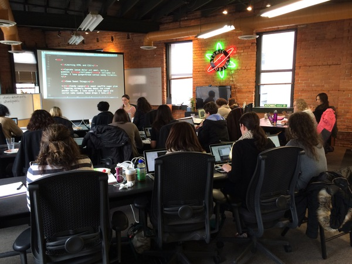

Welcome!
- We're going to talk about Girl Develop It
- We'll practice public speaking
- We'll talk about next steps & tips to teach with us
But first, have some snacks!
Why are we here?
- To ask & answer questions
- To learn and share some teaching tips
- To improve our public speaking skills
- To give and receive feedback
- To become more self-aware
- To build our awesome community!
Let's talk about GDI
What is Girl Develop It?
Girl Develop It is here to provide affordable and accessible programs to learn software through mentorship and hands-on instruction.
Leadership
- Erika Carlson
- Leeann Drees
- Aisha Blake
- Jeseekia Vaughn
We meet once a month and set calendar, evaluate partnerships & opportunities, make sure we're sticking to the GDI mission.
Our GDI Brand:
- Friendly
- Consistent
- Maintain a judgement-free zone
- Generous with our time & knowledge
- Connecting people
A Typical Class
- Facilitator arrives early
- Facilitator handles food, and logistical Q's
- Teacher arrives, sets up
- Facilitator gives intro spiel
- Everyone introduces themselves, quick ice breaker
- We learn, we take a 15 minute break, we learn some more
- Wrap up on time, or a little early to allow for questions.
- Facilitator leads clean up & is last to leave
Good to know:
- Girl Develop It is proud to generously compensate its leaders and instructors for all of the time, expertise, and thoughtful planning that goes into prepping for classes and maintaining community outreach.
- Some chapter leaders/coordinators and instructors use this as bonus income.
- Some chapter leaders/coordinators and instructors donate their portion back into the chapter.
Where the money from our class & workshop fees goes:
- 50% of class fees go to instructor, paid once a month via check
- 25% goes to the chapter leaders/coordinators
- 15% goes to Girl Develop It HQ, which supports all chapters
- 10% goes back into to our chapter fund
You will need to fill out w-9 form so that GDI can pay you, and you'll be responsible for paying taxes on this income.
Exercise: Introductions
One person stands up in front of the group, introduces themselves and shares a few things about themselves.
We give secret, written feedback:
- 1 thing that you do really well
- 1 thing you could improve on
Introduce Yourself
- Your name
- 3 facts about you
- How did you get to Atomic Object today? Use any teaching tools you'd like. Projector, white board, paper, etc.
Feedback: You do this well. You could improve on this.
Collect feedback
- Look at your feedback cards.
- Set 1 or 2 goals for yourself.
Exercise: Groups & Shapes
We're going to practice giving instructions.
Why we're doing this exercise
- It mimics what we do when we teach
- Forces us to communicate with words, not visuals
- We can see if our communication was successful
Break into groups
Perhaps with someone you haven't met before today.
Exercise : How to Play
Teacher
- Pick up the first printout.
- Instruct the students to assemble the pieces to match what you see on the printout
- No peeking!
- Ask questions
- Decide when to stop the "lesson".
Student
- Listen to the instructor and assemble the shapes
- Do not show the teacher what you are working on.
- Ask questions.
Exercise : debrief
- What were the challenges?
- How could you tell if the student "got it"?
- What did you do when the students didn't get it?
- Who asked the most questions, student or teacher?
Preparing to Teach
New Teachers
- Send us an abstract of class you'd like to teach
- TA for 2 GDI class sessions
When it's time to teach, we'll need you to submit:
- a 1 paragraph bio
- w-9 form
- new teacher form (online)
How we decide
who teaches & when

We do our best to schedule the right classes at the best time for our community's needs. About 2 to 3 classes per month.
Let's do this!
- Send us your class abstract: detroit@girldevelopit.com
- We keep you in mind for upcoming teaching opportunities
- We reach out to you to confirm a date that works for you.
- We post the class on meetup.com about 1 month in advance
- The facilitator will be in touch in advance of the class.
Tips
- Give yourself a deadline to finish slides early
- If you're a procrastinator, block off the days before class
- Try to arrive early, best foot forward
- Don't rely on WIFI working
- It's ok to not have an answer.
- Talk through your process, you can Google an answer
- Leave time for questions
Our slides
We like to use Reveal.js to present slides
If you're new to HTML5, one of our teachers will help you get your slides into this format.
<body>
<div class="reveal">
<!-- Any section element inside of this container is displayed as a slide -->
<div class="slides">
<section>
<h3>Welcome!</h3>
<p>(Psssst. We have snacks in the back)</p>
</section>
</div> <!-- end slides -->
</div> <!-- end reveal -->
</body>
Dividing Slides
Just pay attention to the sections and you'll be fine.
<section>
<h3>Welcome!</h3>
<p>(Psssst. We have snacks in the back)</p>
</section>
<section>
<h3>I'm the second slide!</h3>
<p>Really important information on this slide.</p>
</section>
<section>
<h3>Let's learn HTMl & CSS!</h3>
<p>Yes, Let's!</p>
</section>
Don't forget to include
- GDI Intro Slides
- GDI Upcoming Events Slide
We'll make these slides available on GitHub soon. In the meantime email detroit@girldevelopit.com for them.
Submitting Your Slides
- 1 week before class submit the slides to detroit@girldevelopit.com so that we can upload them. (Zipped folder, GitHub or Dropbox link are ideal.)
- Some instructors host their slides on their own websites, allowing them to make last-minute changes easier.
- Recommended also: Upload to GitHub
What To Expect
- Frequent/repetitive student questions
- Everyone is at a different learning level
- Space limitations, noise, weather
- Tech limitations: wifi network, projector
- Managing student expectations
- Unique issues with OS & software
Accessibility Considerations
What is an inclusive, accessible environment to you?
What makes you feel welcome, not welcome?
Teaching Tips
What has worked well for GDI so far
- Teach for the middle
- Emphasis on hands-on learning
- Give resource links & a handout or two
- Bring slides/exercise files on a thumb drive as backup
- Be humble
- Welcome questions & participation
- Make materials available during & after
Upcoming Events
- Sat 2/20: Intro to WordPress at Grand Circus
- Sat 2/27: Intro to SEO
- Sat 3/5 & Sun 3/6: Advanced WordPress with PHP